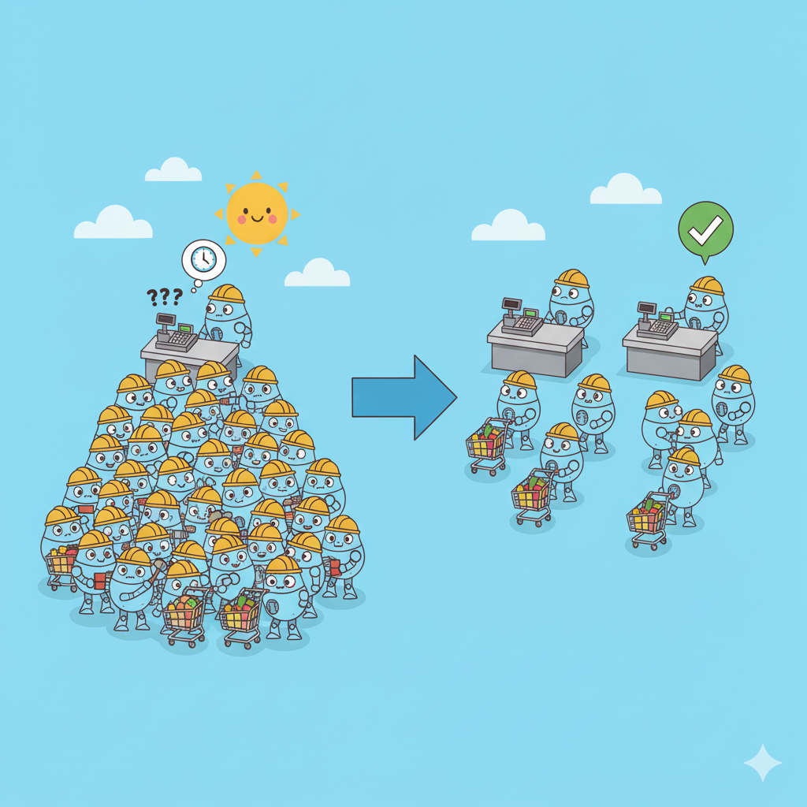

HPC Workshop
High-Performance Computing 101
Tianshi Xu / Department of Mathematics ·
Agenda
tianshixu.com/utilities/hpc-workshop/index.html

Introduction
Motivation
Motivation

Serial vs. Parallel Computing
- Serial: one worker, step by step
- Parallel: many workers at once
What is HPC
HPC ≈ many computers working together as one.
Where HPC Helps
Shared vs Distributed Memory
- Shared memory: Same library building; grab from the local shelf. Fast, but limited by one machine.
- Distributed memory: Interlibrary loan; fetch from other libraries (e.g., GT). Scales capacity, remote is slower.
CPU vs GPU
- CPU: Few expert librarians handle diverse, complex requests.
- GPU: Hundreds of interns do the same simple task across many shelves; very high throughput.
Architecture
Auto Repair Shop
- Front desk: check in; no repairs.
- Work bays: where the work happens.
- Warehouse: parts in/out; storage only.
- Aisles: fast movement of cars and parts.
Cluster Overview
- Login nodes (front desk): sign in; no heavy runs.
- Compute nodes (work bays): CPUs/GPUs run jobs.
- Storage (warehouse): shared data in/out.
- Interconnect (aisles): high-speed links.
Login Nodes — Do / Don’t
- Do: edit code, manage files, submit/monitor jobs
- Don’t: run heavy compute on login nodes
Compute Nodes — Classes
- Standard CPU: multi‑core, MPI/threads
- GPU nodes: 1–8 GPUs/node for ML/acceleration
- High‑memory: 1–4 TB RAM for big data
Storage Hierarchy
/home(small, backed) ·/scratch(fast, purgeable) ·/project(team, long‑term)- Data flow: stage → run → archive → clean
Interconnects
- Ethernet: 1–100 Gbps, 10–100 µs
- InfiniBand: 25–800 Gbps, 0.5–2 µs (MPI/low‑latency)
Job Scheduling (Slurm)
Why a Dispatcher?
- Fairness: many cars, limited bays — someone must queue and prioritize.
- Utilization: keep bays busy; avoid idle gaps and pile-ups.
- Right tools: match jobs with bays that have the needed gear.
- Time & parts: book a time window and ensure parts are available.
- Safety & records: work happens in bays with tracking and logs.
Dispatcher → Slurm (I)
- Work order → job script: what to do + resources.
- Bay type → partition: standard / gpu / highmem.
- Booked time →
--time - Parts on hand →
--mem= - Special tool →
--gres=gpu:1
Dispatcher → Slurm (II)
- How many bays/techs → nodes / tasks / CPUs
- Rush vs routine → priority
- Fill short gaps → backfill
- Link repairs → job dependencies
Common Request Patterns
# MPI (distributed memory)
#SBATCH --ntasks=32
#SBATCH --cpus-per-task=1
# OpenMP (shared memory)
#SBATCH --ntasks=1
#SBATCH --cpus-per-task=32
# Hybrid (MPI + OpenMP)
#SBATCH --ntasks-per-node=2
#SBATCH --cpus-per-task=32
Essential Commands
sinfo
squeue --user=$USER
sbatch job.sh
srun --pty --time=01:00:00 bash
scancel 12345
Interactive vs Batch
- Interactive (while-you-wait): you stay on site, adjust on the fly; good for debugging and small tests.
- Batch (drop-off): leave a work order and go; runs when scheduled, best for long or many jobs.
Workflow & Tools
Tool Sets (as Environments)
- Preset kits by car type: German / American / Japanese.
- Pick one kit for this job: use that set only.
- No mixing: finish and return the kit; keep the floor clean.
- Checklist per kit: so any tech can repeat the same setup.
Environments (unified idea)
- One preset per job: a defined set of tools/libraries.
- Activate → run → deactivate: keep jobs isolated.
- No mixing: avoid conflicts by sticking to one preset.
- Save the spec: share a file/list so others can reproduce.
Remote Development (VS Code)
- Install Remote‑SSH → Connect to Host
- Open folder on the cluster:
$HOME - Explorer: drag‑and‑drop upload/download; rename/move
- Built‑in terminal: run commands when needed
The Loop
- Edit in VS Code; keep input/output organized
- Submit in terminal:
sbatch job.sh - Check:
squeue --user=$USER; open.out/.errin editor - Iterate: adjust resources/env; resubmit
Getting Started
Acknowledgments
- Workshop organizing committee for their dedication and planning
- Emory Math/CS IT Support for providing computing resources and technical assistance
- All participants and contributors who made this workshop possible through their engagement and collaboration
Questions & Practices
- Install VS Code
- Install extensions like
Remote - SSHandPython - Try Google Colab
- Optional: Install
DockerorWSL2(16GB or above RAM recommended)